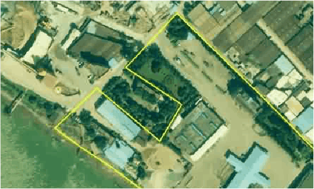

广州市禺城水产有限公司简介

中兴通讯是全球领先的综合通信解决方案提供商。公司通过为全球160多个国家和地区的电信运营商和企业网客户提供创新技术与产品解决方案，让全世界用户享有语音、数据、多媒体、无线宽带等全方位沟通。公司成立于1985年，在香港和深圳两地上市，是中国最大的通信设备上市公司。
中兴通讯拥有通信业界最完整的、端到端的产品线和融合解决方案，通过全系列的无线、有线、业务、终端产品和专业通信服务，灵活满足全球不同运营商和企业网客户的差异化需求以及快速创新的追求。2014年中兴通讯实现营业收入814.7亿元人民币，净利润26.3亿元人民币，同比增长94%。目前，中兴通讯已全面服务于全球主流运营商及企业网客户，智能终端发货量位居美国前四，并被誉为“智慧城市的标杆企业”。